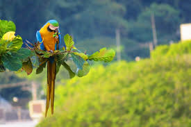

🌱 Por que preservar?
Preservar o meio ambiente é essencial para garantir um futuro saudável para todos. O planeta precisa de nós!
🌟 Ações Sustentáveis
- Evite o desperdício de água
- Use menos plástico e mais consciência
- Plante árvores e cuide do verde
- Faça compostagem e reaproveite alimentos
📊 Impacto Ambiental
Veja abaixo um infográfico com dados reais sobre o desperdício de plástico:
🧠 Quiz Verde
Qual dessas ações ajuda o planeta?